请回答 2024，用 10 个问题回顾过去的一年
1️⃣ 今年做了什么以前从未做过的事情?
① 参加跑步比赛：
在 11 月去南京参加半马比赛
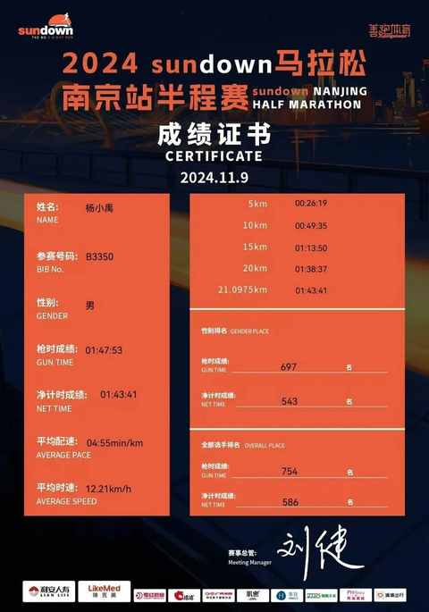
在 12 月去扬州参加 10km 精英赛
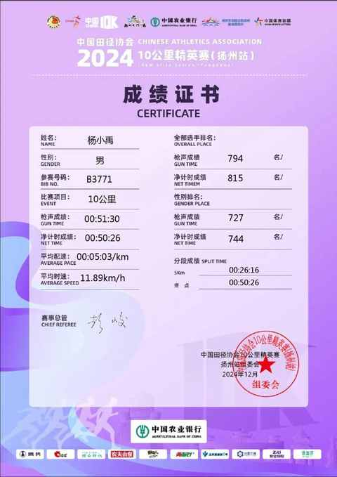
② 连续 21 天发布公众号文章：
有后劲，后面又陆续发了 30 多篇文章。
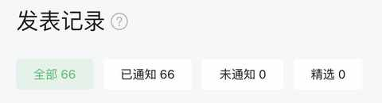
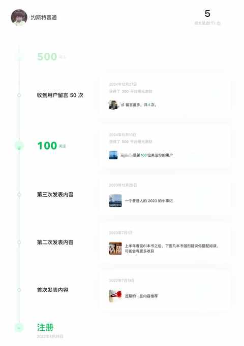
2️⃣ 今年去过哪些城市/州/国家?
① 北京：长城景区的物价和市区一致
② 南京：仅是玄武湖就值得玩上一整天
③ 苏州：诚品书店里面远远不止于书
④ 珠海：有山有水，在海边能远眺澳门
⑤ 扬州：淮扬菜 yyds，就没有吃到不好吃的店
3️⃣ 今年最大的成就是什么?
通过饮食上的调整让老婆和孩子都吃的更健康一些，从而能带动他们做更多力所能及的运动。
现在回顾下来，有一本书和一个播客节目都起到了很好的启发意义：
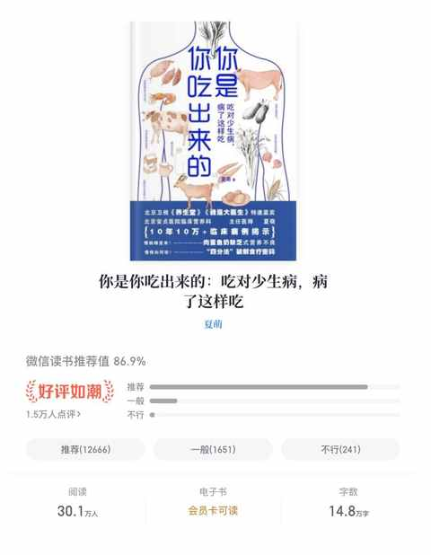
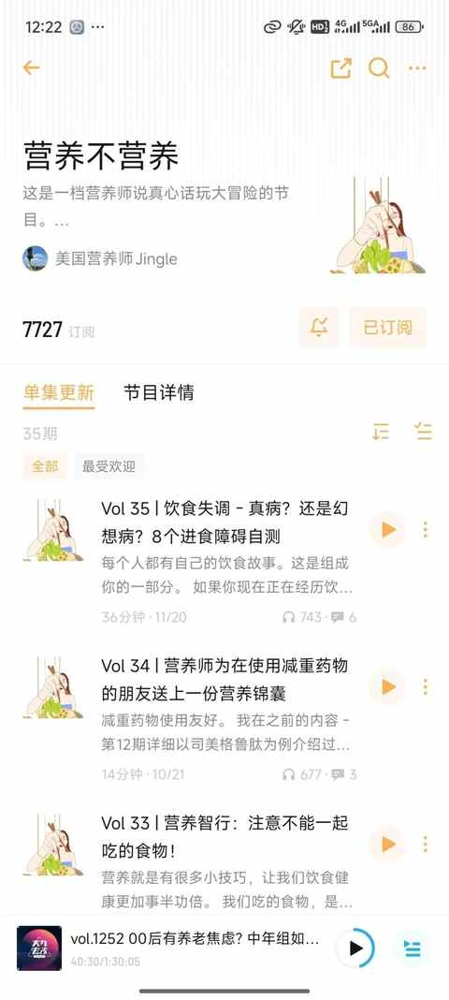
4️⃣ 今年最大的失败是什么?
对儿子的耐心依旧不足，很难抑制住自身的不良情绪，但不会停止学习与尝试各种方式方法。
5️⃣ 今年买过的最好的东西是什么？
可折叠升降桌，价格 499 元。
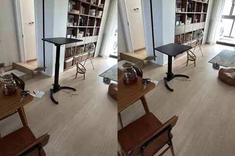
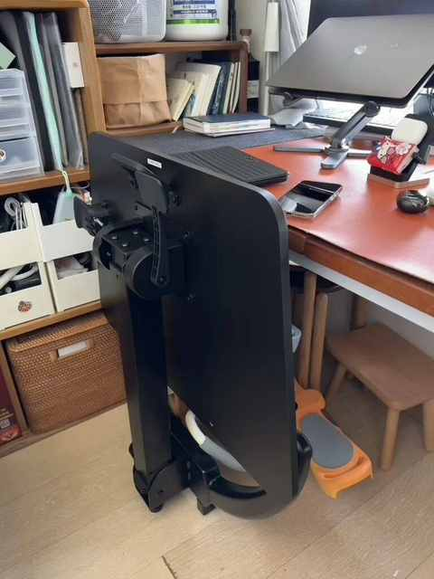
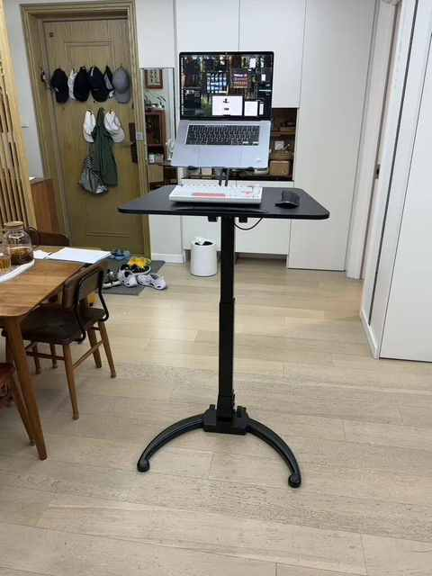
6️⃣ 你希望自己做更多的事情是什么?
① 脚踏实地的赚钱
② 多到一些没去到过的地方，去真听、真看、真感受大大的世界
③ 尽所能去回馈家庭与社会
7️⃣ 你最喜欢的节目是什么?
食贫道的充电专属系列。
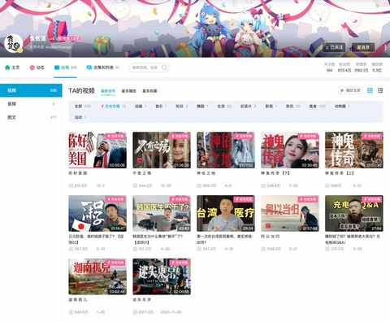
没有最推荐的某条视频，每一个视频都值得一看。
8️⃣ 今年学到了什么有价值的人生经验?
以我为主，为我所用。
任何时候都要在先不区分对错的基础上去感受自己的情绪，因为情绪就是情绪，没有对错。
9️⃣ 今年什么政治问题最激起了你的兴趣?
在社交网络中被很多人提及的刷屏词：民粹主义，到底是什么！！！
如果参考时下流行的方式，询问 ai 关于民粹主义的问题，那么会得出一些看似有用但帮助你理解这个概念毫无用处的笼统的回答。
微信Ai 问答的回复：
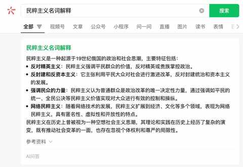
豆包的回复：
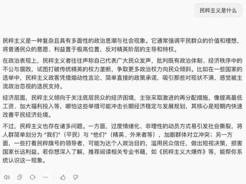
kimi 的回复：
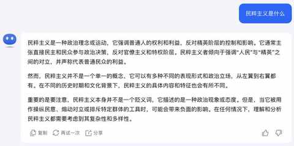
如果想更系统的理解这个概念，就得去看看《智人之上》，民粹主义这四个字贯穿了整本书。
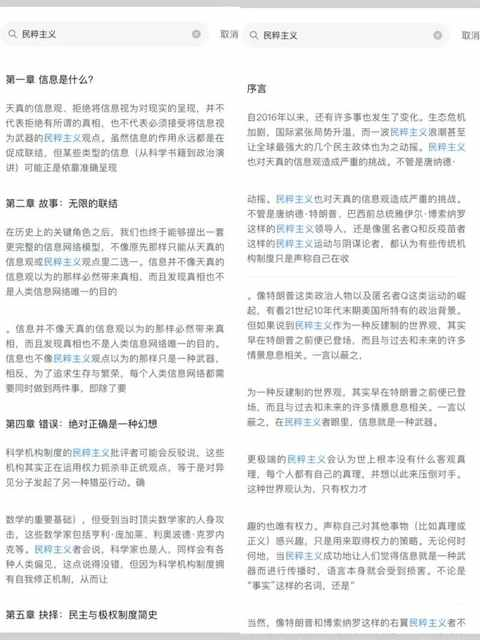
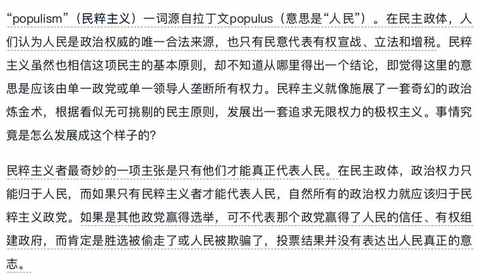
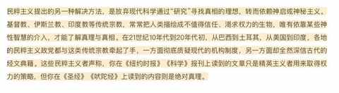
🔟 你会用哪句话概括你的一年?
人到中年，正是敢想敢做的年纪！